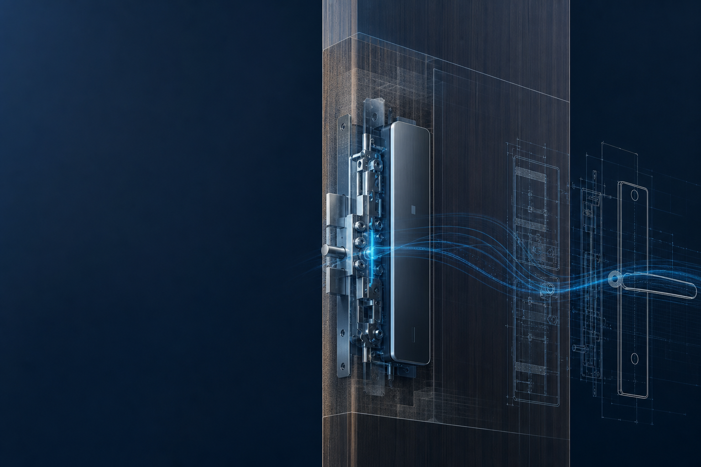
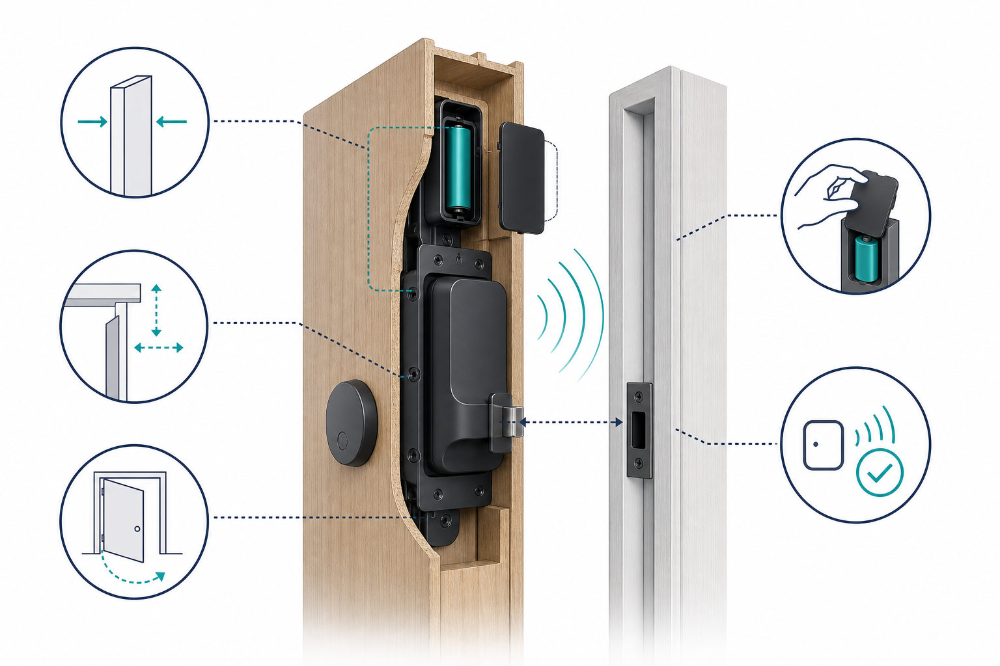
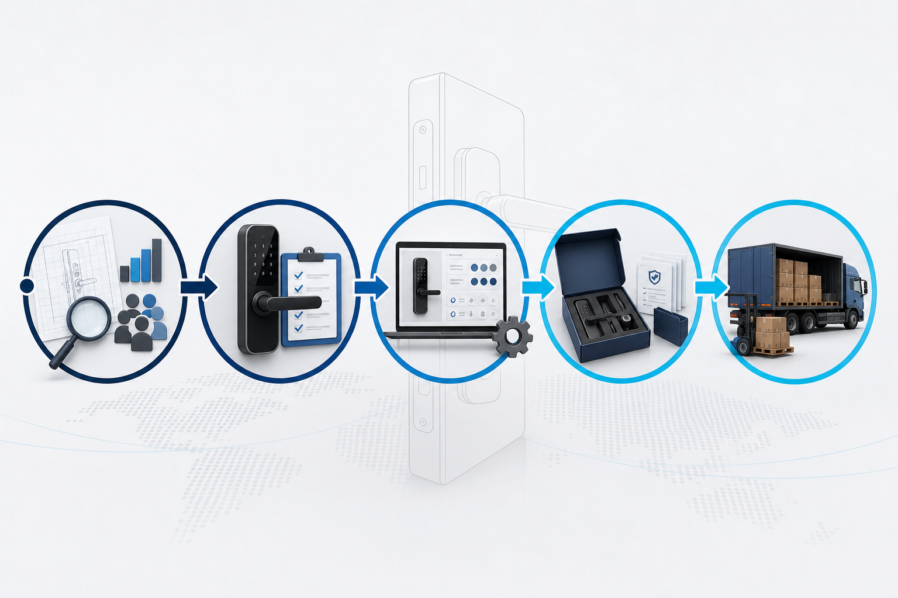
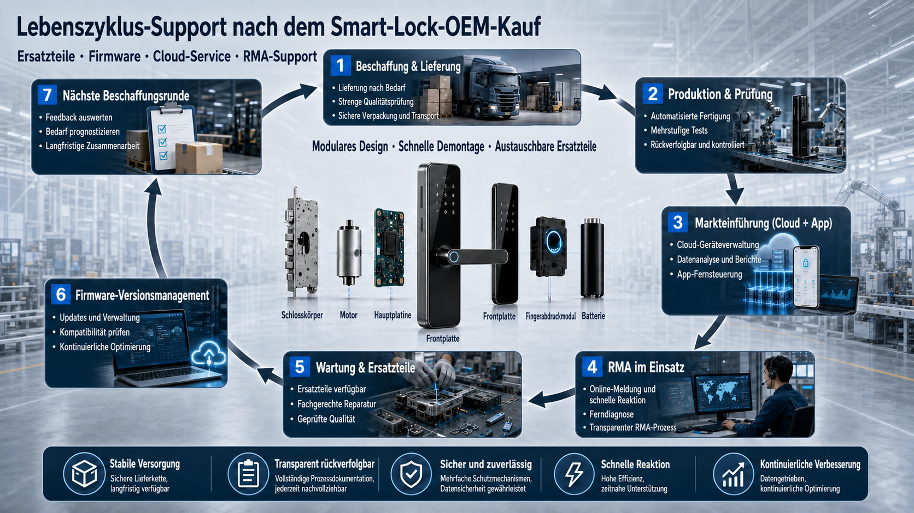

This article is a B2B review framework for brand owners, buyers, integrators and installation teams. Final configuration, compatibility and certification must be confirmed against samples, door data and written specifications before ordering.
Smart-lock selection should not begin with the longest feature list. Door structure, installation space, authorization, emergency access, project version and post-handover responsibility determine whether a model can work in the field. WF-010, WF-019 and WF-026 should therefore be compared as project options, not as names on a product sheet.

1. Freeze the project brief before requesting a quote
Record the target market, number of doors, door material and thickness, handing, installation conditions, expected usage, required authorization methods and launch schedule. Note whether an app, gateway, API or existing platform is involved. Without these inputs, suppliers often compare different scopes under the same model name.
| Project question | Why it affects selection |
|---|---|
| Door and installation space | Lock body, motor, wiring and emergency access must remain mechanically accessible and reliable. |
| Authorization | Remote unlock, PIN, fingerprint, card and mechanical emergency access require different configurations. |
| Project scope | Single doors, apartments, hotels and B2B rollouts need different delivery and maintenance workflows. |
| Target market | CE, FCC, RoHS, radio, privacy and documentation requirements must be considered early. |
2. Check door and installation conditions before comparing models
For invisible locks, available interior space matters more than a product photo. Check the lock case, backset, bolt travel, door gap, material, reinforcement, cable route and access for battery replacement or emergency power. Installation must not bind the mechanical movement and should remain repeatable for future service.

Do not accept a blanket statement such as “suitable for every door.” Send door photos, drawings and measurements and ask the supplier to confirm the assumptions in writing. When several door profiles are involved, each materially different profile should receive its own sample or documented approval.
3. Compare WF-010, WF-019 and WF-026 as project options
The three models can represent different project priorities. WF-010 can be the starting point for broad standard projects, WF-019 for projects focused on concealed appearance and authorization, and WF-026 for applications requiring additional structural or security margin. Final suitability must still be confirmed by sample and specification.
| Comparison point | WF-010 | WF-019 | WF-026 |
|---|---|---|---|
| Project role | Broad standard coverage | Concealed appearance and flexible authorization | Reinforced structure and higher security priority |
| Check first | Door type, lock body, handing | Interior space, user flow, emergency path | Clearance, fastening, load and service access |
| Procurement documents | Configuration, sample and packaging | Authorization, backup path and instructions | Project version, acceptance and responsibility boundaries |
| Seguinte step | Install a standard sample | Test the authorization and appearance flow | Validate structure and maintenance assumptions |

4. Validate a sample instead of comparing features on paper
Install the sample on a real or representative door and record the lock number, mechanical parts, firmware, app or gateway version, power supply and installation state. Test repeated openings, misuse, offline behavior, low-battery warning, emergency power, role handover and test-account reset.
A sample is meaningful only when differences from the production configuration are known. Put changes to the lock body, PCB, firmware, radio module, packaging or supplied documents through a written approval process. The sample approval and change-control checklist should be part of the purchase package.
5. Freeze configuration, roles and handover
Procurement documents should contain more than model and quantity. Add approved door conditions, access methods, app or API interfaces, firmware baseline, packaging, labeling, spare parts, warranty, RMA and the technical escalation contact. For multi-party projects, define who installs, who transfers user rights and who investigates the first operational issue.

For acceptance, keep a lock list with location and serial number, an approved configuration baseline, an emergency-access method, a service contact and a documented escalation path. This keeps the model decision verifiable after production starts.
6. Twelve questions before ordering
- Are door type, thickness, handing and interior clearance measured?
- Which authorization methods are mandatory and which are optional?
- How does mechanical or electrical emergency access work?
- Has every representative door profile been tested with a sample?
- Are lock body, motor, PCB and firmware clearly versioned?
- Which app, gateway or API functions are actually in scope?
- Who installs, accepts and transfers administrator rights?
- Which target-market documents and marks are required?
- How are packaging, labels and project SKUs confirmed?
- Which spare parts and RMA data are provided?
- How are post-approval changes reviewed?
- Are price, lead time, specification and sample approval linked in writing?
Request a WF-010, WF-019 and WF-026 project comparison
Share your door type, target market, quantity, authorization requirements and project phase. WAFU can prepare a structured comparison for sampling, configuration and procurement.
Frequently asked questions
Which model is the best?
It depends on the door, installation space, authorization, security objective and service process. Decide after sample validation and written specification review.
Can one sample be approved for every door?
Only when door profiles, installation conditions and usage are genuinely equivalent. Material differences require another validation.
What should be included in an inquiry?
At minimum, target market, door data, quantity, desired functions, sample timing, installation responsibility and app, API or cloud requirements.